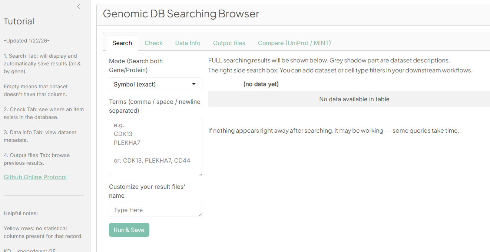

- A user-friendly database and web browser application for searching, annotating, and exporting genomic and proteomic metadata across multiple datasets.
- Supports gene expressing & protein interaction datasets.
- The only dependency is R ; works on Windows, macOS, and Linux. Easy to launch instructions available.
- Also contains analysis functions for statistical and biological analysis.
| Overview | Start Page |
|---|---|
 |
 |
This document provides complete instructions for starting the website browser application and its functions.
Quick Tour
(Contains setup code for R, launching the web browser directly with an example dataset)
install.packages("remotes") # Skip this step if you already have "remotes" package
remotes::install_github("scottcalcalas/XZDBfunction")
library(XZDBfunction)
XZDB.Run() #Launch a demo - with example datasetsSetup Database
(Step-by-step setup instructions for R, and how to launch the database browser directly with example/your dataset)
1. Get protocol and set up your own database
?xzdb.help()
xzdb.help() #Get protocols and setup instructions
# Transfer your datasets to the current folder, check everything is OK to run next step.
xzdb.input.all() #Build the database in current folder and copy them to R package.
# After this step, R always uses your own dataset instead of the example datasetBrowser Functions
- 1. Search
- 2. Check
- 3. Load Data information
- 4. Output Files
- 5. Update Database
- 6. UniProt / MINT Comparison
Function 1. Search
Use the Search tab to obtain detailed search results.
Supported search options:
- Gene Symbol: exact, family, fuzzy
- Protein ID: exact match
- ENSEMBL Gene ID: exact match
(Family search: seaching for gene/proteins start with the same letters but haveing different numbers at end. NCBP2 family search will also includes NCBP1.)
(Fuzzy search: use threshold of 0.1 to have a very permissive, broad search.)
Example: exact searching CDK13 and NCBP2 returns all matching rows for either CDK13 or NCBP2 across all datasets.
The app generates three files automatically:
- Full results
- Details for Gene 1
- Details for Gene 2
Each line represents a row found in our current database, with that database’s description at the beginning.
Function 2. Check
Use the Check tab to: - See which datasets include a specific gene
- Confirm if the gene exists in the database
Function 3. Data information
On the Data info tab, use “Load Data info” button to view dataset metadata and structure.
Function 4. Output Files
Open the Output files tab to: - Preview a result file (using the red Preview Selected button)
- Download results (using the Download button in each row)
Note:
Not all outputs can be previewed.
The output folder should be cleared monthly to prevent slowdowns—please save results you want to keep in other folders.


Setup a New Database
(For package user to setup database inside R)
To use helper to create your own dataset, run:
xzdb.help()
xzdb.input.all() # Run this after modifying the copied filesSynchronize all datasets and index files(include Datasets information.xlsx) into the package shinyapp directly
xzdb.sync.to.shinyapp() #No need to run if you already run xzdb.input.all()Get the currently used datasets inside the package location (If you want to confirm it’s copied successfully)
xzdb.nowDataset() #It copies current using datasets to your working pathExample package storage location, inside R package:
After those steps, start the browser and run “Rebuild EVERYTHING” at Administrator Operations.
Instructions to Configure Local Quick Start
(If you want to use it as one click, instead of opening R)
0. Configure R file
To make a quick start R file, put these two lines:
For example, it can be called Quick_Start.R. The next step is just setting up to run this file using R (not RStudio).
1. Auto Start
(Check examples at Appendix)
On Windows:
A desktop shortcut can automatically launch the Genomic DB Browser, as long as R is installed.
On Mac:
- Ensure R is installed.
- Open the project folder.
- Double-click MAC_Start.command. If the Mac start script fails, use the backup version inside the
App_Infofolder.
2.Start & Package Installation
On the first run, the script will automatically install any missing R packages.
Once installation finishes, the app will open in your browser automatically.
Appendix
A1.Windows Shortcut Example
Modify the shortcut Target to point to Rscript and your Quick Start script: (For example:)
C:\Users\jcc1885\AppData\Local\Programs\R\R-4.4.3\bin\Rscript.exe "R:\Basic_Sciences\Pharm\Borden_Lab\borden\Database\Genomic result Browser\Quick Start.R"